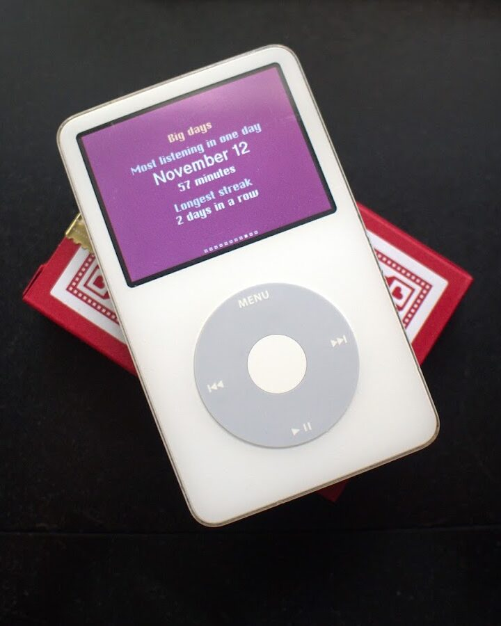

My iPod is a completely offline device, but I wanted a Wrapped for it like the one Spotify sends out every December. Since my iPod runs Rockbox, I wrote a plugin that generates a Wrapped on the device itself from the playback log that Rockbox keeps. This page reads the same log and draws the same slides, just bigger.

See yours here:
Drop these from the .rockbox folder on your device, as many as you have:
wrapped_history.log(best option if you have it; it keeps your tags)
playback.log
playback_0001.logand any other numbered ones
If you use the stock iTunes/iPod workflow, drop an iTunes or Music library export instead (File, Library, Export Library). Two exports a year apart give your exact plays for that year.
Nothing is uploaded. Your files are read in this page and stay on your computer.